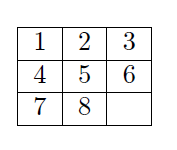
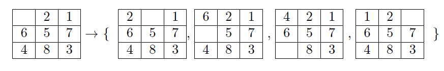

Unit 3 – Search Methods in Graphs
4SC000 Optimal Control and Reinforcement Learning
Slides · Exercises · Jupyter notebooks
1 Shortest paths in graphs
Many systems of interest are naturally described by a weighted graph: a set of nodes \(\mathcal{V}:=\{1,\dots,n\}\), a set of edges \(\mathcal{E}:=\{(i_1,j_1),\dots,(i_r,j_r)\}\) connecting pairs of nodes, and a weight \(w_{ij}\geq0\) attached to each edge \((i,j)\in\mathcal{E}\), for instance \(w_{36}=7\) or \(w_{23}=5\) in Fig. 1. The graph is undirected whenever \(w_{ij}=w_{ji}\) for every edge.

Graphs of this kind model an enormous range of systems – road networks, social networks, transportation and logistics networks, teams of communicating robots, communication and data networks, electrical circuits – and consequently graph algorithms are among the most widely used tools in engineering and computer science (Fig. 2).

A basic and recurring question about such a graph is the shortest path problem: given an initial node and a destination node, find a path between them – a sequence of edges – whose total length, i.e., the sum of the weights of the edges it uses, is as small as possible (Fig. 3). Since Unit 1 and Unit 2 were entirely devoted to an algorithm, dynamic programming, for computing optimal decisions stage by stage, it is natural to ask: can dynamic programming also solve the shortest path problem?

The techniques we will use to solve the shortest path problem with dynamic programming involve converting a weighted graph to an acyclic graph, and then applying DP as we have in Unit 1 to the acyclic graph. Can you guess which acyclic graph would make sense, bearing in mind we want to work from the destination backwards?
1.1 Dynamic programming for shortest paths in graphs
The connection to dynamic programming is direct once we notice what a transition diagram actually is. Recall from Unit 1 that computing an optimal path in a transition diagram – the diagram built from the per-stage cost matrices \(c^k_{ij}\) and, at the last stage, from the terminal costs \(c^h_i\) – amounts to finding a shortest path from the nodes at stage \(0\) to an artificial terminal node at stage \(h+1\) that collects the terminal costs, in the weighted graph obtained by chaining these per-stage cost matrices together. For graphs with this layered structure – one column of nodes per stage, edges only between consecutive columns – dynamic programming already computes shortest paths, since that is exactly what the backward recursion of Unit 1 does. What remains is to see how a general graph, which need not have this layered structure and may contain cycles, can still be handled with dynamic programming.
The trick is to build a transition diagram from the graph. Given a weighted graph with \(n\) nodes, construct a transition diagram with \(h=n-1\) stages, \(n\) states at every decision stage, and only the destination node present at the terminal stage; set \(c^k_{ij}=w_{ij}\) for every stage \(k\), with \(w_{ij}=\infty\) if there is no edge from \(i\) to \(j\) and \(w_{ii}=0\). Fig. 4 illustrates this construction for a small four-node graph: the graph on the left is expanded into a layered diagram of \(n-1\) columns on the right, each column a copy of the \(n\) nodes, with the same edge weights (or \(\infty\), or \(0\) for staying put) repeated at every stage.

Applying the ordinary dynamic programming algorithm to this transition diagram then solves the shortest path problem. The cost-to-go of a state at stage \(k\) is the cost of the shortest path using at most \(n-1-k\) edges (hops); in particular, the costs-to-go at stage \(0\) are the optimal path costs from every possible initial node, and the cost-to-go of a node from which the destination cannot be reached is infinite. Following the resulting policy from a given initial state traces out the shortest path from that node. Fig. 5 shows the same four-node example worked through: on the left, the layered diagram annotated with the costs-to-go computed at every stage together with the optimal path (bold arrows); on the right, the same costs-to-go plotted as a function of the stage, which highlights that the cost-to-go can only decrease (or stay the same) as the destination is approached. In practice, one does not need to construct the transition diagram explicitly, and the recursion can be stopped early once the costs-to-go stop changing from one stage to the next.

Fig. 6 works through a second, undirected example on six nodes, to help build intuition for how the costs-to-go propagate through a graph with several possible paths between each pair of nodes.

The construction above finds the shortest path to any node present at the terminal stage. Sometimes, however, we want the shortest path from a given initial node to one specific terminal node, rather than to whichever terminal-stage node happens to be cheapest to reach. This is easy to accommodate: simply set the cost of every other terminal-stage node to infinity, and apply dynamic programming as usual. Because a path ending at any node with infinite terminal cost is never optimal, this forces every optimal path to end at the desired terminal state.
Fig. 7 shows a small three-stage diagram with a specified initial state (bold, left) and two candidate terminal states (right, costs \(1\) and \(0\)). Suppose we insist on ending at the terminal state with cost \(0\); Fig. 8 shows the same diagram with the other terminal state’s cost changed to \(\infty\), which forces every path to end at the desired one. Fig. 9 shows the outcome on a slightly larger, six-node instance: two initial states (cost \(3\) each) on the left, a single admissible terminal state (cost \(0\)) on the right, and the resulting shortest constrained path highlighted.


The dynamic programming construction above assumed a fixed, unchanging graph, but it is also possible to plan directly for known, predictable changes to the graph over time. A natural instance of this is a robot navigating around moving obstacles: how should the shortest path from A to B be computed when the obstacles’ positions change from one time step to the next (Fig. 10)?

The construction proceeds in two steps. First, consider a separate static graph for each time step, reflecting the obstacle positions at that particular time (Fig. 11).

Second, stack these per-time-step graphs into a single, time-invariant three-dimensional graph, allowing edges only from a node at time \(t\) to a node at time \(t+1\) (Fig. 12). The resulting graph is exactly the kind of layered structure discussed above, so the shortest path in it can again be computed with dynamic programming (or, as we will see shortly, with Dijkstra’s algorithm/A*): the initial node is the robot’s initial position at \(t=0\), and the final node is its desired position at \(t=T\).

1.2 Worked examples
A classic illustration is the Romania road network in Fig. 13: given the distances between neighboring cities, what is the shortest distance from Bucharest to Lugoj? Applying dynamic programming as described above – computing, for every city, the costs-to-go at every stage – yields the answer 504 km, via the route Bucharest, Pitesti, Craiova, Dobreta, Mehadia, Lugoj (Fig. 14).


A second classic instance is robot path planning on a grid: given a grid representation of the world with obstacles, what is the shortest path for a robot moving from a point A to a point B (Fig. 15)? Here the nodes of the graph are grid cells, and a natural choice of weights is: \(1\) distance unit to move horizontally or vertically between adjacent cells, and \(\sqrt2\) units to move diagonally; the distance to (or through) an obstacle cell is infinite, and so is the distance between two diagonally adjacent cells that are both adjacent to the same obstacle cell, since the robot cannot cut across the obstacle’s corner (Fig. 16).


Fig. 17 shows the dynamic programming solution for a particular A-to-B instance – an optimal path (highlighted) threading between the obstacles – while Fig. 18 shows a smaller instance with the costs-to-go and the resulting optimal decisions (arrows) displayed at every cell. It is worth noting, as a side remark, that the cost-to-go can be viewed as a Lyapunov function for the resulting closed-loop system, in the sense that it decreases along optimal trajectories; the optimal policy at each cell can then be understood as following the direction of steepest decrease of this function, adjusted for the stage cost of getting there.


Consider a graph with the same four nodes as in Fig. 4, \(1\) (initial) and \(4\) (destination), but with different links: edges \(\mathcal{E}=\{(1,2),(1,3),(2,3),(2,4),(3,4)\}\) (undirected, so \(w_{ij}=w_{ji}\)), with weights \[ w_{12}=2,\quad w_{13}=5,\quad w_{23}=1,\quad w_{24}=6,\quad w_{34}=2, \] and no edge between \(1\) and \(4\) directly (\(w_{14}=\infty\)).
Following the construction in the previous section, convert this shortest-path problem into a dynamic programming problem: state the number of stages \(h\), the states present at each stage, and the stage costs \(c^k_{ij}\).
Solve the resulting DP problem by computing the costs-to-go \(J_k(i)\) at every stage, and use them to find the shortest path from node \(1\) to node \(4\) and its cost.
(a) DP formulation. With \(n=4\) nodes, take \(h=n-1=3\) stages: states \(\{1,2,3,4\}\) at stages \(0\), \(1\), and \(2\), and only the destination, state \(4\), at the terminal stage \(3\). The stage costs are the same at every stage, \(c^k_{ij}=w_{ij}\) for \(k=0,1,2\), with \(w_{ii}=0\) and \(w_{14}=w_{41}=\infty\) (no edge): \[ w = \begin{pmatrix} 0 & 2 & 5 & \infty \\ 2 & 0 & 1 & 6 \\ 5 & 1 & 0 & 2 \\ \infty & 6 & 2 & 0 \end{pmatrix}, \qquad \text{rows/columns ordered } 1,2,3,4. \]
(b) Costs-to-go. Starting from \(J_3(4)=0\) (the only state at the terminal stage) and applying the backward recursion \(J_k(i)=\min_j\big[c^k_{ij}+J_{k+1}(j)\big]\):
| Stage \(k\) | \(J_k(1)\) | \(J_k(2)\) | \(J_k(3)\) | \(J_k(4)\) |
|---|---|---|---|---|
| \(3\) (terminal) | – | – | – | \(0\) |
| \(2\) | \(\infty\) | \(6\) | \(2\) | \(0\) |
| \(1\) | \(7\) | \(3\) | \(2\) | \(0\) |
| \(0\) | \(5\) | \(3\) | \(2\) | \(0\) |
At stage \(2\), only a direct move to the terminal node \(4\) is available, so \(J_2(i)=w_{i4}\). At stage \(1\), e.g. \(J_1(3)=\min(w_{31}+J_2(1),\,w_{32}+J_2(2),\,w_{33}+J_2(3),\,w_{34}+J_2(4))=\min(\infty,\,7,\,2,\,2)=2\), achieved (with a tie) either by moving straight to \(4\) or by staying at \(3\) for one stage and moving to \(4\) next – both cost \(2\), since the extra stage is “absorbed” by a zero-cost self-loop; this kind of tie is harmless and simply reflects that the true shortest path already takes fewer than \(h\) hops. Reading off \(J_0(1)=5\), achieved via \(j=2\), and then continuing to follow the minimizing \(j\) at each subsequent stage (\(2\to3\to4\)), the shortest path from \(1\) to \(4\) is \[ 1 \to 2 \to 3 \to 4, \qquad \text{cost } 2+1+2 = 5, \] matching \(J_0(1)=5\). (Note this is shorter than either two-hop route, \(1\to2\to4\) at cost \(8\) or \(1\to3\to4\) at cost \(7\).)
1.3 Dijkstra’s algorithm
Dynamic programming solves the shortest path problem, but it can be quite inefficient at it: it explores the entire graph, even when a much smaller portion of it is relevant to the specific path we are after. The example in Fig. 19 makes this concrete: a direct route \(1\to2\to3\) already achieves a total cost of \(2\), yet unmodified dynamic programming still explores every node from \(4\) to \(n\), since each of those nodes is connected to \(1\), \(2\), and \(3\) with cost greater than \(2\) and dynamic programming has no way, a priori, of knowing that exploring them is unnecessary. This motivates two alternative algorithms for the shortest path problem, Dijkstra’s algorithm and A*, which we discuss next.

Dijkstra’s algorithm iteratively generates shorter and shorter paths from the origin to every node it has reached so far. It maintains a list of nodes still to be explored, often called the wavefront or the OPEN list; at each step, new nodes are added to this list based on cost – specifically, the neighbors of whichever node in the list currently has the smallest distance estimate to the origin.
Try it yourself below, on a grid graph like the one used earlier for robot path planning (Fig. 16): horizontal/vertical moves cost \(1\), diagonal moves cost \(\sqrt2\), and a diagonal move is disallowed whenever it would cut across the corner of an obstacle. Click on any cell to add or remove an obstacle (the red and green cells, the origin and destination, are fixed), then press Run. As the algorithm proceeds, every node removed from OPEN – i.e., settled, its shortest distance finalized – turns red, and every node newly added to OPEN – the fringe, discovered but not yet finalized – turns blue; once the destination is settled, the optimal path found is traced in gold.
More precisely, let \(p\) be the initial node and \(t\) the destination. Initialize \(d_i=\infty\) for every node \(i\neq p\), \(d_p=0\), and \(\text{OPEN}=\{p\}\). The algorithm then repeats the following steps:
- Remove from OPEN a node \(i\) with the smallest estimate \(d_i\). If \(i=t\), stop; otherwise, execute step 2 for every node \(j\) reachable from \(i\) by an edge.
- If \(d_i+w_{ij}<d_j\), update \(d_j=d_i+w_{ij}\) and \(\beta(j)=i\), and add \(j\) to OPEN if it is not already there. Otherwise, leave \(d_j\) and \(\beta(j)\) unchanged.
- Once step 2 has been applied for every out-neighbor of \(i\), return to step 1.
The pointers \(\beta(\cdot)\) recorded along the way encode the shortest paths discovered so far: for every node \(i\), \(\beta(i)\) is the node that precedes \(i\) on the shortest path from \(p\) found up to that point. Consequently, once the algorithm stops at \(i=t\), the optimal path is obtained by walking these pointers backward from the destination, \((i_0,i_1,\dots,i_L)\) with \(i_L=t\) and \(i_{\ell-1}=\beta(i_\ell)\) for \(\ell\in\{1,\dots,L\}\), until \(i_0=p\). If OPEN ever becomes empty before \(t\) is reached, no path from \(p\) to \(t\) exists.
Fig. 20 shows the general shape of graph used in a small worked example that requires only three iterations of Dijkstra’s algorithm: starting from the initial node with \((1,0)\), the first iteration reaches a neighbor with pair \((2,1)\) (and updates \(\beta(2)=1\), along with other pairs from other neighbors of node \(1\)), the second iteration reaches \((3,2)\) (updating \(\beta(3)=2\)), and at the third iteration the destination is removed from OPEN and the algorithm terminates.

A second, larger worked example, on the six-node graph shown in Fig. 21, illustrates the bookkeeping more fully. The iterations proceed as follows, starting from initial node \(1\):
| Iteration | Pairs \((i,d_i)\), \(i\in\text{OPEN}\) | |
|---|---|---|
| \(0\) | \((1,0)\) | |
| \(1\) | \((2,1),(3,8),(4,6)\) | \(\beta(2)=1,\ \beta(3)=1,\ \beta(4)=1\) |
| \(2\) | \((3,6),(4,4)\) | \(\beta(3)=2,\ \beta(4)=2\) |
| \(3\) | \((3,6),(5,7)\) | \(\beta(5)=4\) |
| \(4\) | \((5,7),(6,13)\) | \(\beta(6)=3\) |
| \(5\) | \((6,11)\) | \(\beta(6)=5\) |
Reading the \(\beta\) pointers backward from the destination gives the optimal path \((6,\beta(6),\beta(\beta(6)),\dots,1)=(6,5,4,2,1)\).

Returning to the Romania road network of Fig. 13, we can now run Dijkstra’s algorithm directly on the graph, rather than building and searching the full dynamic programming transition diagram. Starting from Lugoj, the iterations proceed as follows:
| Iteration | Pairs \(\{i,d_i\}\), \(i\in\text{OPEN}\) |
|---|---|
| \(0\) | \(\{\text{Lugoj},0\}\) |
| \(1\) | \(\{\text{Mehadia},70\}, \{\text{Timisoara},111\}\) |
| \(2\) | \(\{\text{Timisoara},111\}, \{\text{Dobreta},145\}\) |
| \(3\) | \(\{\text{Dobreta},145\}, \{\text{Arad},229\}\) |
| \(4\) | \(\{\text{Arad},229\}, \{\text{Craiova},265\}\) |
| \(5\) | \(\{\text{Craiova},265\}, \{\text{Sibiu},369\}, \{\text{Zerind},304\}\) |
| \(6\) | \(\{\text{Sibiu},369\}, \{\text{Zerind},304\}, \{\text{Pitesti},403\}, \{\text{Rimnicu Vilcea},411\}\) |
| \(7\) | \(\{\text{Sibiu},369\}, \{\text{Pitesti},403\}, \{\text{Rimnicu Vilcea},411\}, \{\text{Oradea},375\}\) |
| \(8\) | \(\{\text{Pitesti},403\}, \{\text{Rimnicu Vilcea},411\}, \{\text{Oradea},375\}, \{\text{Fagaras},468\}\) |
| \(9\) | \(\{\text{Pitesti},403\}, \{\text{Rimnicu Vilcea},411\}, \{\text{Fagaras},468\}\) |
| \(10\) | \(\{\text{Rimnicu Vilcea},411\}, \{\text{Fagaras},468\}, \{\text{Bucharest},504\}\) |
| \(11\) | \(\{\text{Fagaras},468\}, \{\text{Bucharest},504\}\) |
| \(12\) | \(\{\text{Bucharest},504\}\) |
The \(\beta\) pointers recorded along the way recover the same \(504\) km optimal route found earlier with dynamic programming – but reached in only twelve iterations, without ever building the full transition diagram or examining most of the map.
Consider the weighted, undirected graph with nodes \(\mathcal{V}=\{1,2,3,4,5\}\) and edges \[ \mathcal{E}=\{(1,2),(1,3),(2,3),(2,4),(2,5),(3,4),(4,5)\}, \] with weights \[ w_{12}=4,\quad w_{13}=4,\quad w_{23}=3,\quad w_{24}=4,\quad w_{25}=6,\quad w_{34}=4,\quad w_{45}=5. \] Using Dijkstra’s algorithm, find the shortest path and its cost from the initial node \(p=1\) to the destination \(t=5\). As in the examples above, show your work as a table of the pairs \((i,d_i)\), \(i\in\text{OPEN}\), at every iteration, together with the resulting \(\beta\) pointers. (We will revisit this exact graph with A* at the end of this section, so hold on to your work.)
| Iteration | Pairs \((i,d_i)\), \(i\in\text{OPEN}\) | |
|---|---|---|
| \(0\) | \((1,0)\) | |
| \(1\) | \((2,4),(3,4)\) | \(\beta(2)=1,\ \beta(3)=1\) |
| \(2\) | \((3,4),(4,8),(5,10)\) | \(\beta(4)=2,\ \beta(5)=2\) |
| \(3\) | \((4,8),(5,10)\) | (\(4\) reached again via \(3\) at cost \(4+4=8\), not smaller, so \(\beta(4)\) unchanged) |
| \(4\) | \((5,10)\) | |
| \(5\) | Destination removed from OPEN – terminate |
At iteration \(1\), nodes \(2\) and \(3\) tie at \(d=4\); removing node \(2\) first (the choice is arbitrary among ties) leads to relaxing \(4\) and \(5\) from \(2\). At iteration \(2\), node \(3\) is removed next; relaxing edge \((3,4)\) gives \(d_3+w_{34}=4+4=8\), which is not strictly smaller than the current \(d_4=8\), so \(\beta(4)\) stays equal to \(2\) rather than switching to \(3\). The optimal path is recovered from \(\beta\): \(5\leftarrow\beta(5)=2\leftarrow\beta(2)=1\), i.e. the path \((1,2,5)\), with optimal cost \(10\).
In Dijkstra’s algorithm, every node \(i\) that is removed from OPEN in step 1 has, by construction, the smallest estimate \(d_i\) among all nodes currently in OPEN.
Prove that such a node \(i\) is never placed back into OPEN at any later iteration.
Prove that, at the moment \(i\) is removed from OPEN, \(d_i\) already equals the true optimal cost (shortest-path distance) from the initial node \(p\) to \(i\) – i.e., the algorithm never has to revisit \(i\) later to correct its cost-to-come.
(Assume, as always, that every weight \(w_{ij}\geq0\).)
Write \(D(i)\) for the true shortest-path distance from \(p\) to \(i\), and suppose nodes are removed from OPEN, i.e. settled, in the order \(i_1=p,i_2,i_3,\dots\) (so \(d_{i_1}\leq d_{i_2}\leq d_{i_3}\leq\cdots\) at the moments of removal, by the rule used in step 1).
(a) A settled node is never re-added to OPEN. A node \(j\) is only ever placed into OPEN by step 2, and only as a result of relaxing an edge \((i',j)\) from a node \(i'\) currently being processed in step 1, and only when \(d_{i'}+w_{i'j} < d_j\). Suppose, for contradiction, that some already-settled node \(i\) is relaxed again from a later-processed node \(i'\) (settled after \(i\), so \(d_{i'}\geq d_i\) by the non-decreasing order of removal). Since \(w_{i'i}\geq0\), \[ d_{i'}+w_{i'i} \;\geq\; d_{i'} \;\geq\; d_i, \] so the relaxation condition \(d_{i'}+w_{i'i}<d_i\) can never hold. Hence \(d_i\) is never decreased, and in particular \(i\) is never placed back into OPEN, after it is removed.
(b) The cost-to-come at removal is optimal. We show \(d_i=D(i)\) for every settled node \(i\), by induction on the settling order \(i_1,i_2,\dots\).
Base case: \(i_1=p\) is removed first with \(d_p=0=D(p)\), which is trivially optimal (no path can be shorter than the empty path from \(p\) to itself, since all weights are non-negative).
Inductive step: suppose \(d_{i_k}=D(i_k)\) for every node \(i_k\) settled before the current step, and let \(i\) be the next node removed from OPEN. Since \(d_i\) is the length of the path traced by the \(\beta\) pointers from \(p\) to \(i\) (a valid path using only edges relaxed from already correctly-settled nodes, by the inductive hypothesis), we have \(d_i\geq D(i)\): \(d_i\) is the length of some path, and \(D(i)\) is the length of the shortest one.
Suppose, for contradiction, that \(d_i > D(i)\), and consider a true shortest path \(P\) from \(p\) to \(i\), of length \(D(i)\). Since \(p\) is already settled and \(i\) is not, \(P\) must contain a first node \(y\) along the path that is not yet settled at this step (possibly \(y=i\) itself); let \(x\) be the node immediately before \(y\) on \(P\) (with \(x=p\) if \(y\) is the first node of \(P\)). By the choice of \(y\), \(x\) is already settled, so by the inductive hypothesis \(d_x=D(x)\), and edge \((x,y)\) was relaxed when \(x\) was processed. Hence, at the current step, \[ d_y \;\leq\; D(x)+w_{xy} \;=\; (\text{length of }P\text{ up to }y) \;\leq\; D(i), \] where the last inequality holds because the remaining portion of \(P\) from \(y\) to \(i\) has non-negative length. Combined with the contradiction hypothesis \(D(i) < d_i\), this gives \(d_y \leq D(i) < d_i\), with \(y\) still in OPEN. But \(i\) was chosen in step 1 as the node in OPEN with the smallest \(d\)-value – contradicting \(d_y<d_i\).
Hence no such shorter path \(P\) exists, so \(d_i\leq D(i)\), and together with \(d_i\geq D(i)\) from above, \(d_i=D(i)\). This completes the induction, and with it the proof that every node’s cost-to-come is already optimal the moment it leaves OPEN.
1.4 A*
A* refines Dijkstra’s algorithm by taking into account, for every node \(i\), an estimate (heuristic) \(h(i)\) of the remaining distance from \(i\) to the destination. Instead of ranking OPEN purely by the distance-so-far \(d_i\), A* ranks it by \(d_i+h(i)\), so that nodes which are both cheap to reach and estimated to be close to the destination are explored first.
The heuristic guarantees an optimal path if it satisfies two conditions: (i) admissibility, meaning \(h(i)\) never overestimates the true optimal cost from \(i\) to the destination, and (ii) consistency, meaning \(h(i)\leq w_{ij}+h(j)\) for every edge \((i,j)\). When both conditions hold, A* can in fact be reduced to a plain run of Dijkstra’s algorithm: (1) reweight every edge as \(\bar w_{ij}=w_{ij}+h(j)-h(i)\) (consistency ensures these reweighted costs are still non-negative); (2) run Dijkstra’s algorithm on the reweighted graph to obtain the optimal path; (3) recover the optimal cost in the original graph from the path found. The general A* algorithm given below, however, works whether or not these two conditions hold, simply without the accompanying optimality guarantee.
Concretely, A* proceeds exactly like Dijkstra’s algorithm, with the ranking key changed from \(d_i\) to \(d_i+h(i)\): initialize \(d_i=\infty\) for \(i\neq p\), \(d_p=0\), \(\text{OPEN}=\{p\}\), and repeat:
- Remove from OPEN a node \(i\) with the smallest \(d_i+h(i)\). If \(i=t\), stop; otherwise execute step 2 for every out-neighbor \(j\) of \(i\).
- If \(d_i+w_{ij}<d_j\), update \(d_j=d_i+w_{ij}\), \(\beta(j)=i\), and add \(j\) to OPEN if it is not already there; otherwise leave \(d_j,\beta(j)\) unchanged.
- Once step 2 has been applied to every out-neighbor of \(i\), return to step 1.
As before, the optimal path is recovered by following the \(\beta\) pointers backward from the destination. With a good heuristic, A* is typically much faster than plain Dijkstra’s algorithm, since the heuristic focuses the search toward the destination rather than expanding outward uniformly in every direction – though finding a heuristic that is both informative and provably admissible/consistent is not always easy.
Compare the two side by side below, on the same grid as before, now with both panels sharing the same obstacles: click on either grid to add or remove an obstacle (it is mirrored on both), then press Run to watch Dijkstra’s algorithm (left) and A* (right) search at the same time for the shortest path from the red origin to the green destination. A here uses the straight-line (Euclidean) distance to the destination as its heuristic \(h(i)\) – a valid, admissible choice on this grid, since the straight-line distance between two cells is never larger than the cost of any grid path between them. Watch how much smaller the red/blue region typically grows on the right before A finds the same optimal path that Dijkstra’s algorithm finds on the left.
Returning once more to the Romania road network, a natural heuristic for a search toward Bucharest is the straight-line distance to Bucharest, \(h(i)\), listed below for every city:
| City | \(h(i)\) | City | \(h(i)\) |
|---|---|---|---|
| Neamt | 234 | Giurgiu | 77 |
| Iasi | 226 | Pitesti | 98 |
| Vaslui | 199 | Craiova | 160 |
| Urziceni | 80 | Fagaras | 178 |
| Hirsova | 151 | Sibiu | 253 |
| Eforie | 161 | Rimnicu Vilcea | 193 |
| Bucharest | 0 | Lugoj | 244 |
| Mehadia | 241 | ||
| Dobreta | 242 | ||
| Timisoara | 329 | ||
| Arad | 366 | ||
| Zerind | 374 | ||
| Oradea | 380 |
Running A* from Lugoj to Bucharest with this heuristic – via the reduction to Dijkstra’s algorithm on the reweighted graph \(\bar w_{ij}=w_{ij}+h(j)-h(i)\) – gives:
| Iteration | Pairs \(\{i,d_i\}\) in OPEN |
|---|---|
| \(0\) | \(\{\text{Lugoj},0\}\) |
| \(1\) | \(\{\text{Mehadia},67\}, \{\text{Timisoara},196\}\) |
| \(2\) | \(\{\text{Timisoara},196\}, \{\text{Dobreta},143\}\) |
| \(3\) | \(\{\text{Timisoara},196\}, \{\text{Craiova},181\}\) |
| \(4\) | \(\{\text{Timisoara},196\}, \{\text{Pitesti},257\}, \{\text{Rim. Vilcea},360\}\) |
| \(5\) | \(\{\text{Pitesti},257\}, \{\text{Rim. Vilcea},360\}, \{\text{Arad},351\}\) |
| \(6\) | \(\{\text{Rim. Vilcea},360\}, \{\text{Arad},351\}, \{\text{Bucharest},260\}\) |
Six iterations, against twelve for plain Dijkstra’s algorithm on the same network – again, the same \(\beta\) pointers recover the optimal path and, after undoing the reweighting, the same \(504\) km optimal cost.
Consider again the graph from the earlier exercise: nodes \(\mathcal{V}=\{1,2,3,4,5\}\), edges \(\mathcal{E}=\{(1,2),(1,3),(2,3),(2,4),(2,5),(3,4),(4,5)\}\), and weights \(w_{12}=4\), \(w_{13}=4\), \(w_{23}=3\), \(w_{24}=4\), \(w_{25}=6\), \(w_{34}=4\), \(w_{45}=5\). As a heuristic, use the straight-line distance to the destination \(t=5\):
| \(i\) | \(1\) | \(2\) | \(3\) | \(4\) | \(5\) |
|---|---|---|---|---|---|
| \(h(i)\) | \(6.1\) | \(3.0\) | \(5.4\) | \(3.6\) | \(0\) |
(You can check that this heuristic is admissible and consistent: it is the straight-line distance between the nodes’ positions in the plane, \(1=(0,0)\), \(2=(3,1)\), \(3=(1,3)\), \(4=(4,4)\), \(5=(6,1)\), and every edge weight above is at least as large as the straight-line distance between its two endpoints.) Run A* from \(p=1\) to \(t=5\) with this heuristic, as a table of the pairs \((i,d_i)\), \(i\in\text{OPEN}\), ranked by \(d_i+h(i)\). Compare the number of iterations, and the set of nodes settled, to what you found with plain Dijkstra’s algorithm.
| Iteration | Pairs \((i,d_i)\), ranked by \(d_i+h(i)\) | |
|---|---|---|
| \(0\) | \((1,0)\), rank \(6.1\) | |
| \(1\) | \((2,4)\) rank \(7.0\); \((3,4)\) rank \(9.4\) | \(\beta(2)=1,\ \beta(3)=1\) |
| \(2\) | \((3,4)\) rank \(9.4\); \((4,8)\) rank \(11.6\); \((5,10)\) rank \(10.0\) | \(\beta(4)=2,\ \beta(5)=2\) |
| \(3\) | \((4,8)\) rank \(11.6\); \((5,10)\) rank \(10.0\) | (\(4\) reached again via \(3\) at cost \(8\), not smaller, so \(\beta(4)\) unchanged) |
| \(4\) | Destination removed from OPEN (smallest rank, \(10.0<11.6\)) – terminate |
The optimal path recovered from \(\beta\) is again \((1,2,5)\), with cost \(10\) – exactly matching Dijkstra’s algorithm, as guaranteed by the heuristic being admissible and consistent. The difference is in the work done: A* stops after settling only four nodes (\(1,2,3,5\)), never needing to settle node \(4\) at all, whereas plain Dijkstra’s algorithm (see the earlier exercise) settled all five nodes before reaching \(5\). The heuristic \(h(4)=3.6\) correctly signals that node \(4\) is relatively far from the destination, so it is never worth exploring once \(5\) itself becomes cheaper to reach.
The classic 8-puzzle is a \(3\times3\) frame holding eight numbered tiles and one blank cell; a move slides a tile adjacent to the blank into the blank’s place, and the goal is to reach the ordered configuration below.

Here we play a variant on a torus: the frame wraps around left-right and top-bottom, so a tile at the edge can slide “off” one side and reappear on the opposite side. As a result, the blank always has exactly four possible moves, regardless of its position – including the two wrap-around ones illustrated below, from the same starting position:

Every state of the puzzle is a node of a graph – there are \(9!=362{,}880\) of them, far too many to enumerate, exactly the kind of large, implicit graph discussed above – and every move is an edge of weight \(1\), so finding a shortest solution is a shortest-path problem, solvable with A*. The heuristic used below is the one from Duarte’s own notebook (A_3_K_Puzzle8.ipynb): the sum, over the eight numbered tiles, of the straight-line (torus) grid distance between each tile’s current position and its position in the goal configuration – admissible and consistent, since no single tile can be fixed in fewer slides than that.
Click Shuffle to scramble the puzzle, then either solve it yourself by clicking any tile touching the blank cell, or click Solve with A* to have the algorithm find and play out an optimal solution – the status line reports how many states it had to expand along the way.
1.5 Discussion
A few practical remarks are worth making about Dijkstra’s algorithm and A. For very large graphs, it may not even be feasible to enumerate every node up front to initialize \(d_i=\infty\); the algorithm still works if instead one maintains a list of closed* nodes – nodes already removed from OPEN in step 1 – so that they are never revisited, which is in any case guaranteed not to help by the check \(d_i+w_{ij}<d_j\). If optimality is not required, many other graph search algorithms exist, such as breadth-first and depth-first search (see the label-correcting methods described in Chapter 2 of Bertsekas’ textbook). For robot motion planning specifically, Dijkstra’s algorithm and A* are in general naive choices: it is usually better to construct nodes as the robot moves along – leaving the graph implicit rather than fully enumerated in advance – and to place new nodes randomly rather than on a fixed grid. Rapidly exploring Random Trees (RRT) are a popular method built around these two ideas.
More fundamentally, Dijkstra’s algorithm and A* are typically much more computationally efficient than dynamic programming at computing one optimal path. Dynamic programming, by contrast, explores every node and thereby produces the optimal path from every node to the destination at once – overkill if only a single path is needed, but exactly the right output if what is needed is a policy, since a policy must specify a good decision at every state, which is precisely what makes it able to cope with the disturbances discussed in Unit 2. This raises a natural question, addressed next: can Dijkstra’s algorithm also be used, somehow, to produce a policy rather than a single path? And if it can, why bother with dynamic programming at all?
As a concrete illustration, Dijkstra’s algorithm can be used to recover the very same optimal policy that dynamic programming produced in Unit 1, by running it repeatedly. Take the Unit 1 transition diagram and: (1) add an artificial terminal node, with the cost of arriving to it from each terminal-stage node set equal to that node’s terminal cost; (2) run Dijkstra’s algorithm from each candidate initial state to this artificial terminal node, and record, for each initial state, only the first decision of the resulting optimal path – this first decision is exactly what the optimal policy prescribes at that state.
Fig. 22 shows the Unit 1 transition diagram with the new artificial terminal node (node 15) added, collecting the terminal costs of the two original terminal-stage nodes (0 from node 13, 4 from node 14).

Running Dijkstra’s algorithm from initial state \(1\):
| Iteration | Pairs \((i,d_i)\), \(i\in\text{OPEN}\) |
|---|---|
| \(0\) | \((1,0)\) |
| \(1\) | \((3,2),(4,1)\) |
| \(2\) | \((3,2),(7,1),(8,2)\) |
| \(3\) | \((3,2),(10,2),(11,4),(8,2)\) |
| \(4\) | \((6,3),(10,2),(11,4),(8,2)\) |
| \(5\) | \((6,3),(10,2),(11,4),(12,7)\) |
| \(6\) | \((6,3),(14,4),(13,7),(11,4),(12,7)\) |
| \(7\) | \((14,4),(13,7),(11,4),(12,7)\) |
| \(8\) | \((15,4),(13,7),(11,4),(12,7)\) |
| \(9\) | \((15,8),(13,7),(11,4),(12,7)\) |
| \(10\) | \((15,8),(13,6),(12,7)\) |
| \(11\) | \((15,6),(12,7)\) |
giving the path \(1\to4\to7\to10\to13\to15\): the first decision of this path belongs to the optimal policy at state \(1\), and states \(4,7,10\) along the way inherit this same first decision (i.e., the same edge direction) as their optimal first decision, since the tail of an optimal path is itself optimal.
From initial state \(2\):
| Iteration | Pairs \((i,d_i)\), \(i\in\text{OPEN}\) |
|---|---|
| \(0\) | \((2,0)\) |
| \(1\) | \((4,4),(5,1)\) |
| \(2\) | \((4,4),(9,4),(8,5)\) |
| \(3\) | \((7,4),(9,4),(8,5)\) |
| \(4\) | \((10,5),(11,7),(9,4),(8,5)\) |
| \(5\) | \((10,5),(11,7),(12,5),(8,5)\) |
| \(6\) | \((10,5),(11,7),(14,5),(8,5),(13,10)\) |
| \(7\) | \((10,5),(11,7),(15,9),(8,5),(13,10)\) |
| \(8\) | \((10,5),(11,7),(15,9),(13,10)\) |
| \(9\) | \((11,7),(15,9),(13,10)\) |
| \(10\) | \((15,9),(13,10)\) |
giving the path \(2\to5\to9\to12\to14\to15\), with \(5,9,12,14\) inheriting the same first decision.
From initial state \(3\):
| Iteration | Pairs \((i,d_i)\), \(i\in\text{OPEN}\) |
|---|---|
| \(0\) | \((3,0)\) |
| \(1\) | \((6,1),(7,3),(8,1)\) |
| \(2\) | \((10,5),(11,4),(7,3),(8,1)\) |
| \(3\) | \((10,5),(11,3),(7,3),(12,6)\) |
| \(4\) | \((10,4),(11,3),(12,6)\) |
| \(5\) | \((10,4),(13,7),(14,6),(12,6)\) |
| \(6\) | \((13,7),(14,6),(12,6)\) |
| \(7\) | \((13,7),(15,10),(12,6)\) |
| \(8\) | \((15,7),(12,6)\) |
| \(9\) | \((15,7),(14,6)\) |
| \(10\) | \((15,7)\) |
giving the path \(3\to8\to11\to13\to15\), with \(8,11,13\) inheriting the same first decision.
From initial state \(6\):
| Iteration | Pairs \((i,d_i)\), \(i\in\text{OPEN}\) |
|---|---|
| \(0\) | \((6,0)\) |
| \(1\) | \((10,4),(11,3)\) |
| \(2\) | \((10,4),(13,7),(14,5)\) |
| \(3\) | \((13,7),(14,5)\) |
| \(4\) | \((13,7),(15,9)\) |
| \(5\) | \((13,7)\) |
giving the path \(6\to11\to13\to15\), with \(11,13\) inheriting the same first decision.
Combining the first decisions obtained from these (and the remaining, not shown here) runs of Dijkstra’s algorithm for every node yields exactly the same optimal policy that dynamic programming produced directly in Unit 1 (Fig. 23).

So Dijkstra’s algorithm can reproduce a dynamic-programming policy, at the cost of running it once per state rather than once overall. This still leaves the question from the main text open: since dynamic programming’s exploration of every node is what makes it comparatively expensive, why use it at all, given that Dijkstra’s algorithm and A* are typically faster? The answer, as noted in the main text, is that dynamic programming extends to stochastic dynamic programming (Unit 2), which copes with random disturbances – something Dijkstra’s algorithm, built around deterministic edge weights, cannot do.
1.6 Historical note
Edsger W. Dijkstra was a professor at TU/Eindhoven from 1962 to 1984.

He later recalled designing his shortest-path algorithm in about twenty minutes, without pencil or paper, on a café terrace in Amsterdam:
“What’s the shortest way to travel from Rotterdam to Groningen? It is the algorithm for the shortest path, which I designed in about 20 minutes. One morning I was shopping in Amsterdam with my young fiancée, and tired, we sat down on the café terrace to drink a cup of coffee and I was just thinking about whether I could do this, and I then designed the algorithm for the shortest path. As I said, it was a 20-minute invention. In fact, it was published in 1959, three years later. The publication is still quite nice. One of the reasons that it is so nice was that I designed it without pencil and paper. Without pencil and paper you are almost forced to avoid all avoidable complexities. Eventually that algorithm became, to my great amazement, one of the cornerstones of my fame.”
– Edsger W. Dijkstra (1930-2002)
2 Online replanning policy
A transition diagram, as we have seen, is just a weighted graph, so methods for computing shortest paths in graphs – Dijkstra’s algorithm, A* – apply directly to it (Fig. 25). Doing so for every stage and every state, and each time recording only the first decision of the resulting optimal path, yields exactly the optimal policy: a function that, for each state and stage, gives the first decision of the optimal path from that state onward (Fig. 26). This is precisely the strategy worked through in the callout above. As already noted, though, computing the optimal policy this way – one shortest-path computation per state – is typically less computationally efficient than obtaining it directly with dynamic programming.


There is, however, a way to make this approach practical: instead of precomputing the full policy, apply Dijkstra’s algorithm (or A) online*. The idea is simple. First, compute the optimal path for the current initial state only, and take its first decision (Fig. 27). Then, if no disturbance occurs, simply continue to follow the next decision along this already-computed optimal path; if a disturbance does occur, recompute the optimal path online, from the new current state, and apply the first decision of this new optimal path (Fig. 28).


Ignoring the disturbances explicitly modeled in Unit 2, this online replanning strategy produces exactly the same policy as dynamic programming. The two are nonetheless meaningfully different in character: the dynamic-programming policy is explicit – a lookup table computed once, offline, for every state – whereas the online replanning policy is implicit, requiring a fresh shortest-path computation every time a disturbance occurs. In the literature this implicit policy is also known as certainty equivalent control, and it is closely related to model predictive control, a topic addressed later in the course (Fig. 29).

The following table summarizes which of the methods discussed in this unit can be used for which task:
| Optimal paths | Dynamic programming, and Dijkstra’s algorithm (more efficient) |
| Online replanning policy | Dynamic programming (might be computationally hard), Dijkstra’s algorithm offline (less efficient), or Dijkstra’s algorithm online (requires online computations) |
| Stochastic dynamic programming | Stochastic dynamic programming only – Dijkstra’s algorithm cannot handle stochastic disturbances |
3 Summary
This unit revisited the shortest path problem in weighted graphs, first showing that it can be solved with the dynamic programming algorithm already developed in Units 1 and 2, by building a suitable transition diagram from the graph. Because dynamic programming explores every node and can therefore be inefficient when only a single path is needed, we then introduced two alternative algorithms, Dijkstra’s algorithm and A, which are typically much more efficient at computing one optimal path, with A further sped up by a heuristic estimate of the remaining distance to the destination. We then showed how Dijkstra’s algorithm (and A*) can also be used, applied online after each disturbance, to realize the same policy that dynamic programming computes explicitly and offline – a strategy known as online replanning, or certainty equivalent control, closely related to model predictive control. The main message of the unit is that several methods are available for computing optimal paths and optimal policies in graphs, each with its own trade-offs – chief among them whether online computation is feasible – with one notable exception: only (stochastic) dynamic programming extends to problems with stochastic disturbances.